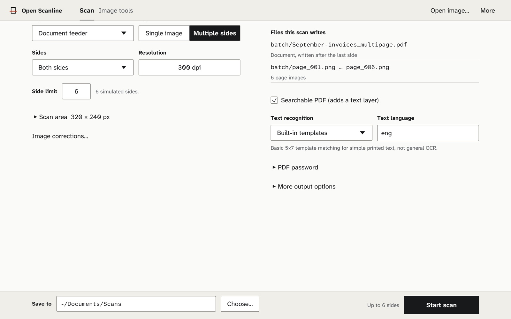
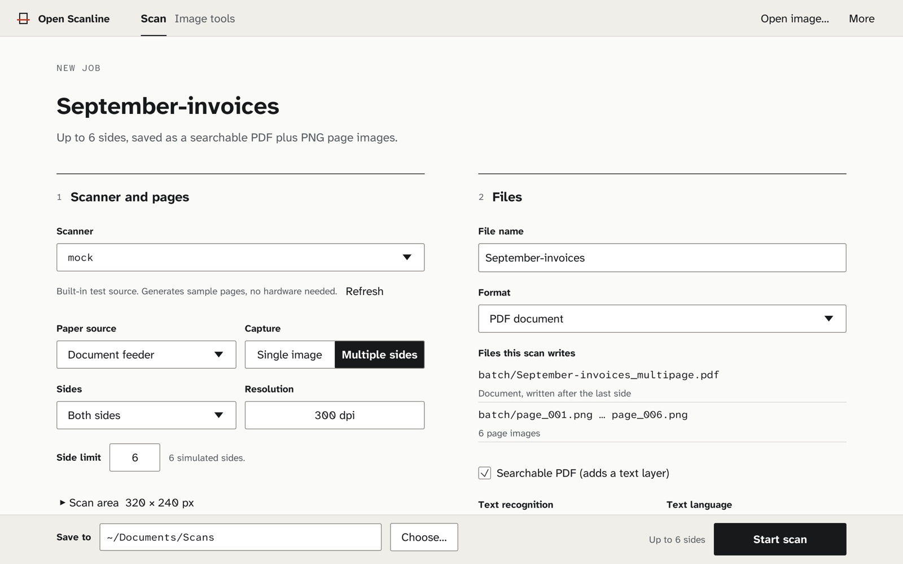
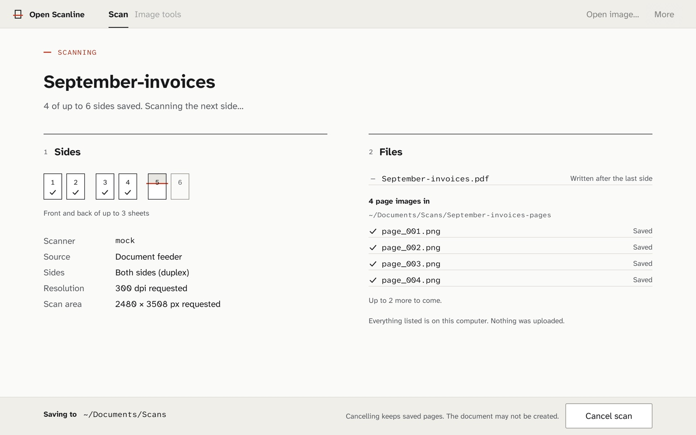
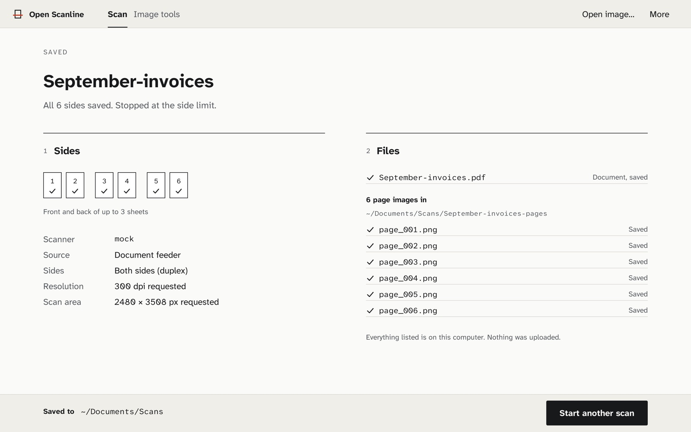
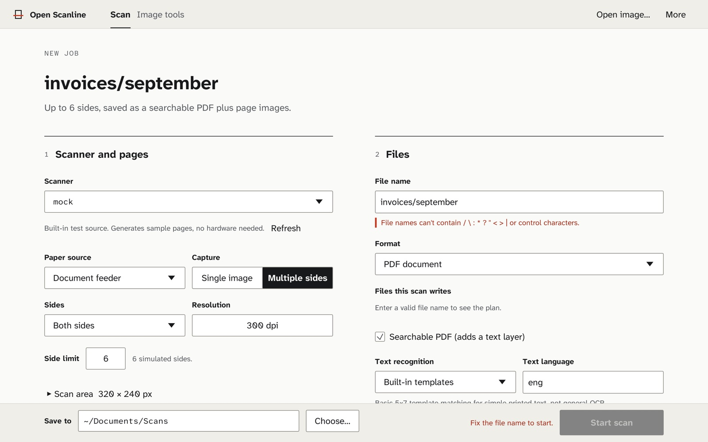
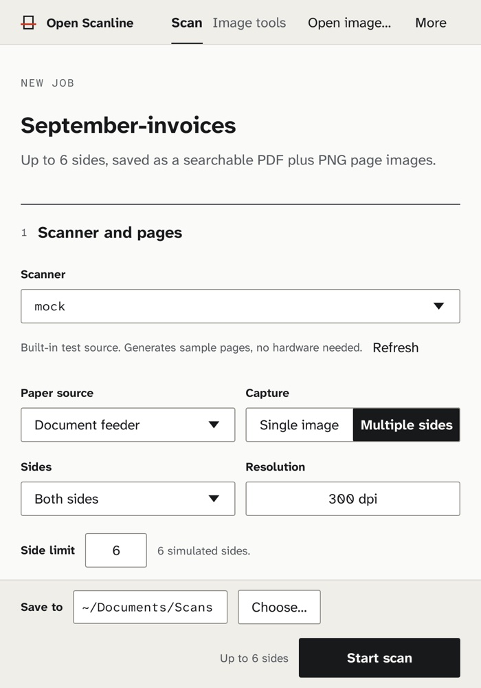
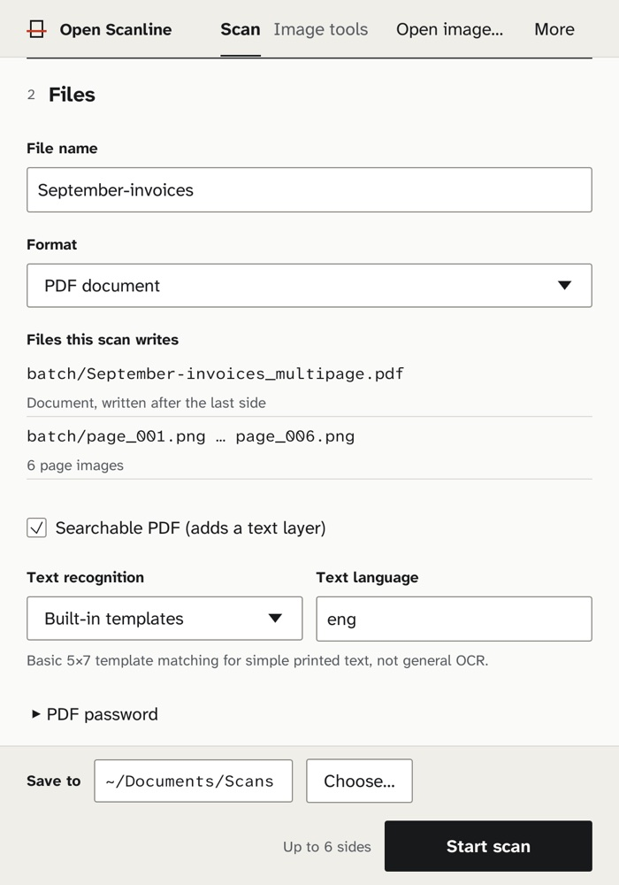

1 Prepare
Choose the scanner, paper source, sides, and resolution. The file plan lists the exact names the scan will write before you press Start, and Start says why it's disabled when a setting needs fixing.

Local scanning · Rust · MIT
Open Scanline acquires pages from flatbed and document scanners, cleans them up, and writes page images, searchable PDFs, and multipage TIFF or PDF files on your own machine. It is a command-line tool, a desktop app, and a Rust library you can embed.
No cloud service, no accounts, no telemetry.

Choose the scanner, paper source, sides, and resolution. The file plan lists the exact names the scan will write before you press Start, and Start says why it's disabled when a setting needs fixing.

One slot per requested side, paired for duplex. Each page is listed the moment it is written to disk. The PDF is marked as written after the last side, because that is when it is assembled.

The result names every file that exists and why capture stopped: the side limit or an empty feeder. If a scan fails, it says which files were kept and which were never created.




Screenshots come from the macOS build using the built-in mock source. No
scanner hardware or personal documents are shown, and paths are shortened
to ~.
PNG JPEG TIFF WebP BMP GIF PDF, multipage TIFF and PDF, including searchable and password-protected PDFs.open-scanline configuration directory. PDF passwords are never written to it.Mock and file sources are always included, so you can build, test, and try the whole workflow without hardware. Real scanners depend on the operating system, installed software, device permissions, and network.
| Source | Linux | macOS | Windows | Needs |
|---|---|---|---|---|
| Mock and file | Yes | Yes | Yes | Nothing beyond a readable input file |
| SANE | Yes | With SANE | With SANE | A working scanimage and a configured device |
| WIA | No | No | Yes | Windows PowerShell, WIA, and a usable scanner |
| eSCL | Yes | Yes | Yes | A reachable AirScan/eSCL scanner over HTTP or HTTPS |
| TWAIN host | Host | Host | Host | A separate host or bridge; not an acquisition backend |
A reported backend does not guarantee that a particular scanner is installed, connected, or reachable. Details are in the backend guide.
The repository pins Rust 1.91.0. The core-only profile leaves out the GUI, OCRS, and ONNX. Scanner hardware is optional.
# Scan one page from the mock source, then process it
cargo run --no-default-features -- scan --device mock --out scan.png \
--width 320 --height 240
cargo run --no-default-features -- process --in scan.png \
--out processed.png --invert
# Launch the desktop app (default features)
cargo run -- guidocs/usage.mdCommands, configuration, OCR, PDF export, desktop and plugin modesdocs/backends.mdPlatform and scanner requirements, discovery, optional toolsdocs/architecture.mdLayers, data flow, and compatibility boundariesdocs/performance.mdThe reproducible benchmark runner and its limitsdocs/release-notes.mdPublic API changes planned for the next release